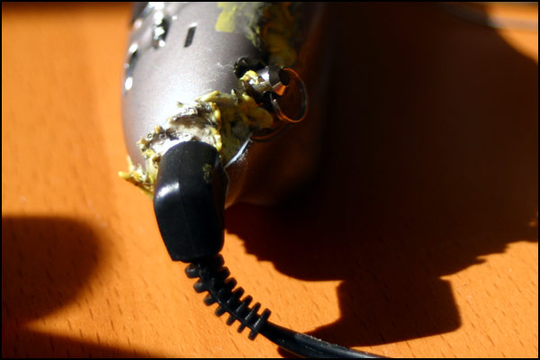

|
After losing my first MP3 player, the venerable Rio PMP300, I
decided to purchase the Apacer
Audio Steno. This page starts out as a short review of the device, and then
concludes by explaining, with pictures, how I "fixed" the poorly attached headphone
jack problem.
Mini-Review
The audio steno is a tiny little thing, about the size of a plump
USB flash drive, and in fact it has a USB plug right in it like a
flash drive. In fact, you can use it as a flash drive. When I was shopping
around, these were the things that made me go for it:
Cheap: Just $99 when I got it. Now they're like $70!
Storage: Stores 128mb, which was four times my PMP300. It's solid state,
too, which is good because it doesn't skip and isn't subject to damage from dropping.
Battery: Uses just one AAA battery, and does last for a few days of
on and off playing.
Software: There is none. It acts as a USB mass storage
device, so you can plug it into any modern operating system and just
use it as a drive. No proprietary, controlling music manager software,
or any of that crap.
When I received it, there were some unexpected pros:
It goes, "Hello!!" when you turn it on, and "Bye!!" when you turn
it off!
The manual is hilarious. "You will be attached to the blue
backlight." hahaha.
It comes with a USB extension cable, since it is actually pretty hard to
fit that big thing into the back of a computer.
... and there were some unexpected cons:
It comes with headphones that are, as far as I can tell,
impossible to wear. I think you have to hold them on your ears with
two hands.
It does not save your playlist position, so if you turn it off and then
turn it on again, you start at the beginning of the playlist. Since my playlist
is usually over 80 songs, I have to use shuffle or else be extremely bored!
The buttons respond much more slowly than the Rio PMP300 did. It takes a
quarter second or so to skip to the next song. Also, it has this stupid rocker
switch that you sometimes have to press down in order to select a menu item,
but when you press it you're likely to flip it to one side or the other.
Finally, and this is the subject of this page, the headphone jack is
connected poorly and easily comes loose, leaving you with a crackly,
monophonic, or silent listening experience.
Snap, Crackle, Pop
OK, all you budding consumer device designers. Here is my biggest
piece of advice: if your device has a jack, like a headphone jack or
power adaptor jack, that will likely be used frequently, do not
mount the jack only by soldering it to the printed circuit board.
I can't tell you how many of my devices have had this fail in the
past. A bump against the plug has a levering action that pulls the
contacts right off the board. Don't do it!! Instead, mount the
connector securely to the chassis, and connect it to the board through
flexible wires.
Well, Apacer did it with the Audio Steno, and after I owned it for
a month or so, the left channel of my headphones started to drop out.
(Because the left channel is the tip, or core, of the stereo phone jack,
its connector is deepest and has the most pressure on it.) I opened the
Steno up -- sure enough, the solder and pin had broken off the pcb and
was making contact only when the jack was 'pushed' in a certain way.
I soldered it back. This is pretty easy to do--usually the contacts
are already so happily accepting of solder that you just have to heat
the existing solder dot for a fraction of a second, and it will flow and
make contact again. (These pins are soldered to traces on the PCB, and
sometimes that trace can break off with the solder pad. If so, you might
need to follow that trace to its destination, then solder a wire connecting
the pin to the destination of the trace.)
That worked for like, a week. Then it came loose again. I opened,
soldered, and put it back together. This time, I made a practice of removing
the headphones whenever I put the device in my pocket (to avoid straining
forces). It broke again, after a few days. Too busy to solder it again,
I walked around for weeks with a special method I developed of holding the
device in my hand that would put pressure on the headphone jack and cause
it to make correct contact. But that totally sucked.
Next, the final solution.
I opened it up again, and this time completely desoldered all of
the leads on the headphone jack, removing it from the PCB. Then, I did
what they should have done in the first place: I attached it to the
chassis instead of the PCB.
To do this properly I suppose I would have used epoxy or something
like that. Instead I used a messy trick from my elementary school days,
melting plastic with an old soldering iron.
Here's that iron (actually the first soldering iron I ever owned):
You can see the caked on burned plastic. Any old cheap pen you have
sitting around makes a good source of "plastic solder":
So, melted pen and melted chassis and melted headphone jack come
together to form a nice, sturdy connection. Then, I took short lengths
of wire and connected the pins to the solder pads on the PCB. It looks
like this:
(I told you it was messy!) Here's another view with some dramatic
lighting:
The two halves didn't really fit together any more after the
operation. I had to slap on a bunch more melted plastic:
After putting it all back together it actually started up and
worked!
Yeah, lookin' good!

There you have it: Drastic surgery results in a player that has
lasted almost an entire day of stereophonic MP3-artifacted joy.
Back to tom7.org or leave
a comment!
|